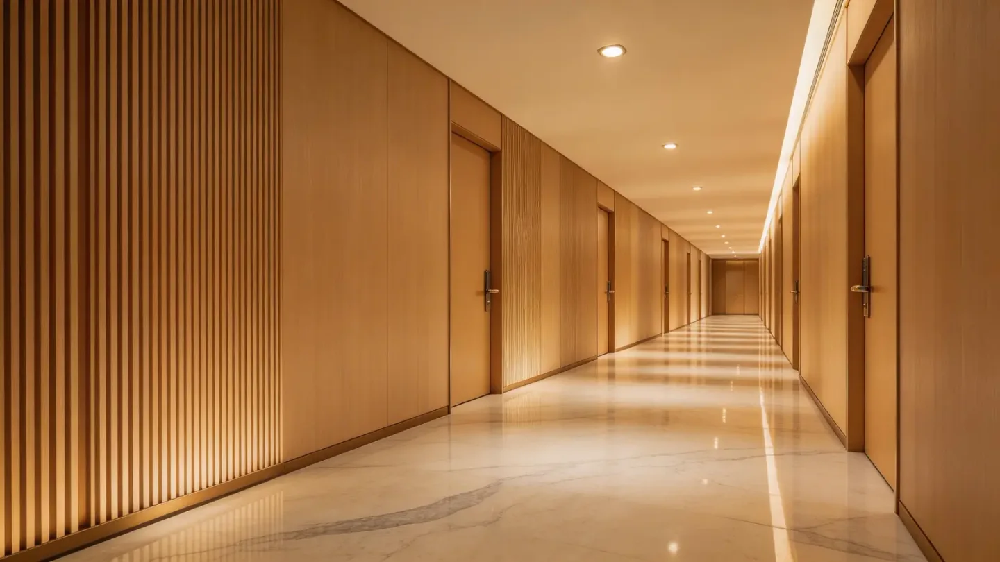

Hotel Corridor Fluted Wall Panel Case Breakdown
This application case shows how an importer or project team can plan a hotel corridor feature-wall system around visual rhythm, maintenance, installation details and batch control—without treating the panel image as the complete specification.

A hotel corridor needs more than an attractive surface. The practical solution is to place fluted panels in selected visual zones, coordinate plain surfaces and trims around doors and corners, control directional lighting, and order connected areas with a documented finish reference and batch plan.
1. Start with the corridor problem
Long corridors can feel repetitive, while doors, signs, service panels and lighting create many interruptions. A fluted wall panel can add vertical rhythm and make selected sections feel more intentional, but using the same profile on every surface may create visual noise and complicate maintenance access.
The first decision is therefore zoning: identify the arrival view, lift lobby, corridor turns and important room entrances. These are stronger candidates for feature panels than hidden service areas or walls that require frequent access.
2. Build a coordinated material palette
Choose one main fluted finish, one calmer complementary surface and a clear trim color. Warm wood looks can soften a hospitality corridor; darker finishes can frame doors or wayfinding points; lighter adjoining surfaces help prevent the space from becoming visually heavy.
Review samples under the actual warm or cool lighting planned for the corridor. Deep grooves create shadow, so the same color can look different under grazing light. Approve the physical surface, profile depth and gloss together rather than approving a screen image alone.
3. Resolve edges before quantity
Door frames, inside and outside corners, skirting lines, ceilings, emergency equipment and access panels determine whether the installation looks finished. Draw these transitions before calculating the main-panel quantity. List each trim by type, color and length, and confirm how the profile terminates at openings.
Panel direction also affects cutting. Full-height vertical layouts may reduce visible joints, but available lengths, lift access, handling and carton dimensions still need to be checked with the selected SKU.
4. Control batches and replacement stock
Connected corridor areas should use one approved reference and a controlled production plan where practical. Record the product code, finish, pattern direction and batch information. Keep an agreed reserve for installation loss and future repairs, especially when a replacement piece must visually match a continuous wall.
Carton labels can be organized by floor, zone or finish to make site receiving easier. This is especially useful when plain panels, fluted panels and several trim types arrive together.
Buyer checklist for a hotel corridor package
- Dimensioned corridor elevations and door positions
- Feature zones versus standard wall zones
- Approved physical finish and profile sample
- Inside corners, outside corners, starts, ends and skirting transitions
- Lighting temperature and viewing direction
- Exact reports required by the hotel and destination market
- Batch plan, carton labels and replacement reserve
- Installation method approved for the substrate
Questions buyers ask
Should every hotel corridor wall use a fluted panel?
No. Fluted panels are often most effective in controlled feature zones. Other surfaces may need simpler finishes, access panels or different maintenance properties.
Can one sample confirm the whole system?
A surface sample is only the start. Review the full profile, joint, trims, corner details, lighting and installation method.
How should replacement material be planned?
Agree a practical reserve based on layout, installation risk, transport and the importance of future visual matching. Label and store it with the project reference.
Turn your hotel corridor drawings into a product checklist.
Send the country, elevations, intended feature zones, preferred finish and estimated quantity. Luvie can help organize the questions needed for samples, trims, packing and order planning.
WhatsApp +30 6947135317